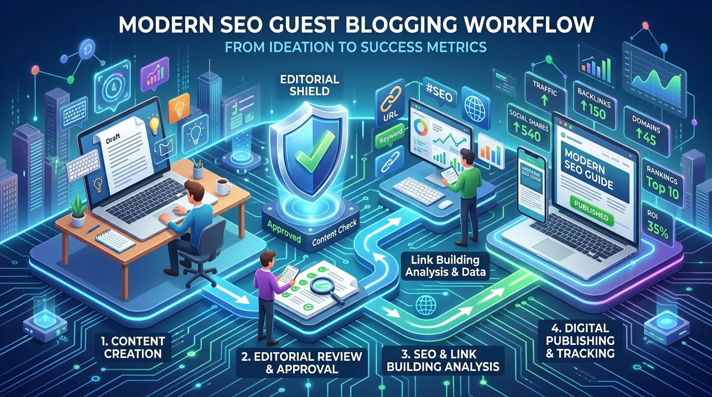

Clickfor Net: Complete Guide to the Website, Guest Blogging, Content and What You Should Know
If you have recently searched for clickfor net, you may have noticed that the information surrounding the website is surprisingly inconsistent. Some pages describe it as a general information platform, while others focus almost entirely on guest blogging, article submissions, SEO and publishing opportunities.

If you have recently searched for clickfor net, you may have noticed that the information surrounding the website is surprisingly inconsistent. Some pages describe it as a general information platform, while others focus almost entirely on guest blogging, article submissions, SEO and publishing opportunities.
So what exactly is Clickfor Net?
The most useful way to understand clickfor.net today is as an online content and guest-blogging website where readers can discover articles while writers and businesses can explore opportunities to publish content. The site's public title identifies it as a "Write For US | News & Article Blogging | Guest Blogging Site," which gives a much clearer indication of its publishing model than generic descriptions of it as simply a technology or lifestyle blog.
That distinction matters.
If you are a casual reader, you may be interested in the articles and categories available on the site. If you are a blogger, marketer, freelancer or business owner, your interest may be different: you may want to know whether Clickfor Net accepts guest posts, what types of topics it covers, whether publishing there can support your content strategy, and how much SEO value you should realistically expect.
This guide brings those questions together in one place.
What Is Clickfor Net?
Clickfor Net is an online article publishing and guest-blogging website operating at clickfor.net.
The site's identity is closely associated with content publishing rather than being a conventional software product, ecommerce store, social network or internet service provider.
Its public website title specifically references:
- Write For Us
- News
- Article blogging
- Guest blogging
That makes the publishing component central to the entity.
At the same time, Clickfor Net is not limited to one narrow subject. Third-party reviews and indexed material describe content spanning areas such as business, technology, finance, health, law, travel, education, fashion, sports and automotive.
In other words, it is better thought of as a multi-category publishing platform than as a specialist publication.
Clickfor Net at a Glance
| Attribute | Details |
|---|---|
| Website | clickfor.net |
| Type | Online publishing and guest-blogging website |
| Primary publishing model | Articles and guest contributions |
| Public positioning | Write For Us / News / Article Blogging / Guest Blogging |
| Content model | Multi-category |
| Access | Public web content |
| Main audience | Readers, writers, bloggers, businesses and marketers |
| HTTPS | Active |
| Domain registration | May 4, 2018 according to third-party domain data |
| Best understood as | Content publishing and guest-blogging platform |
The domain information currently available through ScamAdviser lists a 2018 registration date and a valid SSL certificate, while noting that WHOIS ownership information is hidden.
Why Is Clickfor Net Appearing in Search Results?
There is a simple reason the name has started attracting attention: guest blogging and informational content overlap heavily with search marketing.
A writer may discover Clickfor Net while searching for places to publish an article.
A business owner may discover it while researching guest-post opportunities.
An SEO professional may encounter it while evaluating publishing websites.
And a normal reader may simply arrive through a Google result for a particular article.
That creates several different search intents around the same domain.
For example:
- Reader intent: "What does Clickfor Net publish?"
- Contributor intent: "Can I submit an article to Clickfor Net?"
- SEO intent: "Is Clickfor Net useful for guest posting?"
- Trust intent: "Is Clickfor Net safe or legitimate?"
- Navigational intent: "What is clickfor.net?"
A good explanation of the entity needs to address all of these without pretending they are the same question.

What Does Clickfor Net Publish?
Clickfor Net is a multi-category website rather than a publication built around one specialist niche.
Third-party reviews currently identify ten core categories associated with the site: Automotive, Business, Education, Fashion, Finance, Health, Law, Sports, Technology, and Travel.
This mix is important because it explains why different people can have very different impressions of the site.
Someone looking for business content may see Clickfor Net as a business publication. A technology writer may see it as a tech guest-posting opportunity. A travel writer may notice the Travel category first. A marketer may focus almost entirely on the site's publishing model.
All of those perspectives can describe part of the website without necessarily describing the entire entity.
Business Content
Business is one of the categories associated with Clickfor Net. Business-oriented publishing can cover subjects such as entrepreneurship, workplace practices, business operations, digital transformation, productivity and company growth.
For readers, these articles can provide general information and ideas. For contributors, business is also a practical category because companies, consultants and entrepreneurs often have useful knowledge that can be turned into educational articles.
The important thing is to make the content genuinely useful rather than treating guest blogging as nothing more than a place to insert a backlink.
Technology and Digital Topics
Technology is another important part of Clickfor Net's content ecosystem. Technology publishing can cover software, digital tools, internet trends, artificial intelligence, cybersecurity and other developments.
The competitor article you provided also presents Clickfor Net as a platform with technology and digital-trend content intended for general readers.
For beginners, this kind of content can be useful because technical concepts are often easier to understand when they are explained without excessive jargon.
For experienced technology professionals, however, a general article should not automatically be treated as a substitute for technical documentation, research papers or official product documentation.
Finance
Finance is another category associated with Clickfor Net. Finance articles can attract significant search interest, but this is also an area where readers need to be careful about the difference between general information and professional financial advice.
An article explaining a financial concept may be useful for learning. It does not necessarily mean the author is qualified to recommend an investment, financial product or trading strategy.
That distinction is particularly important for any content involving personal financial decisions.
Health
Health is another category included in the site's broader publishing structure. Health content can be valuable when it explains terminology, general concepts or questions readers may want to discuss with a healthcare professional.
But medical claims should always be treated differently from ordinary lifestyle content. If an article concerns symptoms, diagnosis, medication, treatment or a serious medical condition, readers should verify the information with a qualified healthcare professional or authoritative medical source.
Law
The Law category is an interesting part of Clickfor Net's topical structure. Legal information can be useful for helping readers understand basic terminology and identify questions they may need to ask.
But laws vary by jurisdiction, and legal situations are often highly dependent on individual facts. Therefore, an article on a general publishing website should be considered educational material rather than personalized legal advice.
Travel
Travel is another category associated with Clickfor Net. Travel articles can cover destinations, planning, practical advice and tourism-related subjects.
This is generally a lower-risk category, although travelers should still verify time-sensitive information such as visa rules, entry requirements, local restrictions and transportation information through official sources.
Education, Fashion, Sports and Automotive
The remaining categories broaden the site's audience further. Education can appeal to students and lifelong learners. Fashion can cover style, trends and consumer interests. Sports can attract readers looking for news, explanations and related topics. Automotive content can range from vehicles and maintenance to industry developments.
The result is a broad publishing environment rather than a single-topic blog.
Is Clickfor Net Mainly a Guest Blogging Website?
This is one of the most important questions about the entity.
Yes, guest blogging is a central part of how Clickfor Net is presented publicly. The site's title explicitly includes "Write For US," "Article Blogging," and "Guest Blogging Site."
Third-party reviews also describe Clickfor.net as a platform where external writers can submit articles across multiple categories.
That means Clickfor Net can be relevant to:
- Freelance writers
- Bloggers
- Content marketers
- SEO professionals
- Agencies
- Consultants
- Business owners
- Subject-matter contributors
However, anyone considering publication should check the site's current submission instructions directly rather than relying on an old third-party article. Publishing policies can change.
What Is Guest Blogging?
If you're unfamiliar with the term, guest blogging simply means writing an article for a website other than your own.
For example, imagine a cybersecurity consultant writes an educational article about protecting small businesses from phishing attacks. Instead of publishing it only on the consultant's own website, they may submit it to an external publication that accepts technology or business contributions.
The benefits can include:
- Reaching a new audience
- Building a writing portfolio
- Increasing brand visibility
- Demonstrating subject expertise
- Networking with publishers
- Potentially earning an editorial backlink when permitted
But there is an important SEO caveat: A guest post should primarily provide value to readers. Treating every guest post as a backlink transaction can lead to low-quality content and an unnatural link profile.
Is Clickfor Net Useful for SEO?
This question requires a more realistic answer than simply saying "yes."
Publishing an article on another website can contribute to brand exposure, referral traffic and, depending on the site's editorial policies and the nature of the link, potentially provide SEO value.
But no guest post can guarantee higher Google rankings.
Google evaluates pages using many signals, and a single backlink is not a shortcut around the need for useful content, technical SEO, strong topical relevance and a good overall website.
For that reason, the best approach to Clickfor Net or any guest-posting website is to evaluate several factors:
- Topical Relevance: Is the website relevant to your industry? A link from a genuinely relevant publication is generally more meaningful to your audience than a random link from an unrelated site.
- Content Quality: Does the article genuinely answer a question or solve a problem? Thin content written solely to obtain a link is unlikely to be a strong long-term strategy.
- Editorial Fit: Does your article match the publication's audience? A well-written article can still be a poor guest post if it has nothing to do with the website's readers.
- Link Placement: If links are allowed, they should make contextual sense. A natural citation or reference is very different from stuffing several commercial anchor-text links into an article.
- Referral Potential: Don't look only at SEO metrics. If an article can actually bring qualified readers to your website, it has value even without considering search rankings.
Does Clickfor Net Have SEO Value?
There is no responsible way to promise a specific SEO outcome from publishing on Clickfor Net.
Third-party reviews describe the domain as a guest-blogging platform and note that its traffic and authority are still relatively modest compared with established publishers.
That means marketers should evaluate it as one potential publishing opportunity, not as a guaranteed ranking solution. A diversified content strategy is usually more sensible than relying on one guest-post domain.
Is Clickfor Net Legit?
Based on current public information, clickfor.net is an active website and a functioning online publishing domain.
Third-party domain data shows:
- The domain was registered on May 4, 2018.
- The domain currently resolves successfully.
- HTTPS is active.
- The site is associated with Cloudflare infrastructure.
- WHOIS ownership details are privacy-protected.
These facts establish that the domain is not simply a newly created page with no history.
However, legitimacy and authority are different things. A real website can still publish articles of varying quality.
So the better question isn't only "Is Clickfor Net legit?" It is: "Is this particular Clickfor Net article, author, link or publishing opportunity appropriate for what I'm trying to accomplish?"
Is Clickfor Net Safe to Visit?
Current third-party website analysis reports a valid SSL certificate and describes the domain as very likely safe, while also noting that its traffic ranking is relatively low.
HTTPS is a positive technical signal because it encrypts the connection between the browser and the website. But HTTPS alone doesn't prove that every external link or third-party service linked from a website is trustworthy.
The safest approach is straightforward:
- Keep your browser and security software updated.
- Check the destination before entering sensitive information.
- Don't download unexpected files.
- Be cautious with external payment pages.
- Verify third-party services independently.
- Don't assume that an article's recommendation is an endorsement or guarantee.
What Makes Clickfor Net Different From a Normal Blog?
The biggest difference is the contributor-oriented publishing model.
A traditional company blog usually exists primarily to publish content produced by the company itself. A guest-blogging website creates another layer: external contributors can potentially submit articles for publication.
That changes the relationship between the website and its content: the platform provides the publishing environment, the contributor provides the article, and the reader receives the information.
This model can produce a wider range of subjects and perspectives, but it also means content quality can vary from one contributor or article to another. That is why evaluating individual articles remains important.
Clickfor Net for Writers
If you're a writer, Clickfor Net can be relevant for several reasons:
- Build a Portfolio: Published articles can demonstrate that you can write for an external audience. This can be useful for freelancers who are still building their portfolio.
- Explore New Niches: A multi-category site can allow writers to experiment with different subjects.
- Build Industry Visibility: If your article genuinely demonstrates knowledge, it can help introduce your expertise to readers.
- Support Brand Awareness: For businesses, educational guest articles can put the brand in front of people who may not have encountered it previously.
But don't confuse publishing volume with authority. One excellent article that genuinely helps readers is more valuable than ten generic posts written only for links.
Clickfor Net for Businesses and Marketers
Businesses can approach guest blogging from a different angle.
Suppose a software company has developed expertise in customer onboarding. Instead of publishing another promotional article saying "our software is the best," it could contribute an educational article explaining common onboarding mistakes and how companies can reduce implementation friction. The brand can then be introduced naturally where appropriate.
That approach has several advantages:
- It provides genuine information.
- It demonstrates expertise.
- It avoids overly promotional writing.
- It gives readers a reason to remember the company.
- It can generate referral traffic if the audience is relevant.
The article should stand on its own even if every promotional element is removed. That's a good test for any guest contribution.
Clickfor Net for Readers
Readers have a simpler goal: they want useful information.
From that perspective, Clickfor Net's broad category structure can be convenient because different subjects are available under one domain. You can encounter technology, business, finance, travel, health, law and other subjects without constantly switching between websites.
But convenience shouldn't replace source evaluation. For a low-stakes topic, a general article may be all you need. For an important decision, use the article as the beginning of your research rather than the end.
Clickfor Net vs. Specialized Websites
| Factor | Clickfor Net | Specialized Website |
|---|---|---|
| Topic variety | Broad | Usually narrow |
| Guest contributions | Central part of positioning | Depends on publication |
| Reader accessibility | Generally broad | Varies |
| Subject depth | Depends on article | Often deeper within niche |
| Contributor opportunity | Relevant | Varies |
| Best for | General publishing and discovery | Specialized research |
| SEO opportunity | Possible, but not guaranteed | Depends on site quality |
| Professional authority | Must be evaluated by topic | Often stronger within specialty |
This isn't a competition where one model always wins. A specialist medical publication will naturally be better for medical research than a general guest-blogging site. A broad publishing website may be more useful to a writer who wants to contribute an article across a wider category.
Advantages of Clickfor Net
- Multiple Content Categories: Writers and readers are not restricted to one narrow subject.
- Guest Blogging Focus: The site's public positioning explicitly includes guest blogging and article submission.
- Long-Standing Domain: Third-party domain information places the registration date in 2018, giving the domain several years of history.
- HTTPS Security: The domain currently has a valid SSL certificate.
- Useful for Different Audiences: Readers, bloggers, businesses and content marketers can approach the platform for different reasons.
Potential Limitations
No guest-blogging website should be evaluated without considering its limitations:
- It Is Not a Major Media Brand: Clickfor Net should not be compared directly with publications that have enormous audiences and large editorial teams.
- Traffic Appears Relatively Modest: Third-party analysis currently describes the site's traffic rank as low. That doesn't make the website useless, but it does mean marketers should keep expectations realistic.
- Content Quality Can Vary: A contributor-driven model naturally introduces differences in writing style, expertise and depth.
- SEO Results Are Not Guaranteed: Publishing an article does not guarantee rankings, traffic or authority.
- Verify Submission Terms: If you're submitting an article, check the current rules for accepted topics, links, formatting, editorial requirements and publication conditions.
How to Evaluate a Clickfor Net Guest Post Opportunity
Before submitting content, use this quick checklist:
Check the Audience
Ask yourself: Would my target audience actually read this website? If the answer is no, the opportunity may have limited marketing value.
Check the Existing Articles
Read several recent posts. Don't judge the site from its homepage alone. Look at article quality, topic relevance, author information, publication frequency, external links, editorial style, and content depth.
Check the Link Policy
Don't assume that a guest post automatically means you can add multiple dofollow commercial links. Confirm the current rules directly.
Check the Editorial Standards
A site that publishes everything without review may provide less value than one with clearer editorial requirements.
Think Beyond Metrics
Domain metrics can be useful, but they're not the entire story. Consider relevance, readership, content quality and brand fit.
A Better Guest Blogging Strategy
If your objective is SEO or brand awareness, don't build your entire strategy around one website. Instead, think in layers:
- Layer 1: Your own website — Publish comprehensive resources on your own domain.
- Layer 2: Relevant external publications — Contribute genuinely useful articles to sites whose audiences overlap with yours.
- Layer 3: Industry relationships — Build relationships with journalists, editors, bloggers, communities and professional organizations.
- Layer 4: Natural mentions — Earn references through original research, useful tools, data, expert commentary and genuinely valuable content.
This is much stronger than publishing dozens of nearly identical guest posts.
What Should You Write for Clickfor Net?
If you're considering submitting an article, avoid overly generic topics.
Instead of "10 Benefits of Technology," try something more specific: "How Small Businesses Can Use AI Automation Without Replacing Human Customer Support."
Instead of "Why Digital Marketing Is Important," try: "A Practical SEO Checklist for a New Local Business Website."
The second version is more useful because it solves a recognizable problem.
Good Guest-Post Characteristics
A strong article should generally be:
- Original
- Useful
- Well researched
- Properly structured
- Written for humans
- Relevant to the selected category
- Clear about its claims
- Free from unnecessary promotion
If you wouldn't publish the article on your own website because it isn't good enough, it probably isn't good enough for someone else's either.
Should You Use Clickfor Net for Backlinks?
Potentially, but don't look at it as a guaranteed backlink shortcut.
A backlink is most useful when it makes sense in context and comes from a relevant publication. If you're using guest posting purely to manufacture links at scale, you're approaching SEO from the wrong direction.
A stronger approach is: relevance + useful content + editorial fit + natural linking + diversified sources. Clickfor Net can be considered within that broader strategy, but it shouldn't become the strategy itself.
What About Clickfor Net and Google Rankings?
Google does not rank a website simply because it has published a guest post somewhere.
Search performance depends on the complete picture: the quality of the target page, search intent, site architecture, topical relevance, content usefulness, authority signals, links and many other factors.
Therefore, claims such as "publish on Clickfor Net and your website will rank quickly" should be treated skeptically. SEO is not that simple. A guest post can support visibility, but it is only one component of a much larger search strategy.
Frequently Asked Questions About Clickfor Net
Clickfor Net is an online article publishing and guest-blogging website associated with the domain clickfor.net. Its public site title identifies it as a "Write For US," news, article blogging and guest blogging site.
Yes. Guest blogging and article submissions are central to the site's public positioning, and third-party reviews describe it as a platform for external contributors.
Current third-party information identifies categories including Automotive, Business, Education, Fashion, Finance, Health, Law, Sports, Technology and Travel.
The website is publicly accessible, although current submission or contributor terms should always be checked directly on the site.
The site's public positioning includes "Write For US" and guest blogging, indicating that contributor submissions are part of its model. Check the current submission guidelines before preparing an article.
Third-party website analysis reports valid HTTPS and describes clickfor.net as very likely safe, while also noting relatively low traffic. As with any external website, normal online safety precautions are still recommended.
Clickfor.net is an active website with a domain history going back to 2018 and a functioning HTTPS configuration. Legitimacy, however, should not be confused with expert authority on every subject published there.
A relevant guest article may provide exposure, referral traffic and potentially SEO value depending on the publication and linking circumstances. However, no individual guest-posting site can guarantee Google rankings.
It can be relevant to bloggers and writers looking for external publishing opportunities, particularly if their subject fits one of the site's categories.
Businesses can potentially use guest articles for thought leadership, audience exposure and content distribution. The strongest results come from educational content rather than heavily promotional posts.
Treat general articles as informational material and verify important financial or legal claims with authoritative sources or qualified professionals.
No. The domain discussed here is clickfor.net, an online content and guest-blogging website. It should not be confused with unrelated businesses or services using similar "Click4Net" or "Click for Net" names.
You should not assume that any guest post automatically guarantees a particular type of backlink. Always review the current editorial and linking rules before submitting content.
Final Verdict: Is Clickfor Net Worth Exploring?
Clickfor Net is best understood as a multi-category online publishing and guest-blogging website rather than simply another technology blog.
Its public identity is especially important: the domain describes itself around Write For Us, news, article blogging and guest blogging, while third-party sources identify a range of categories spanning business, technology, finance, health, law, education, sports, travel and more.
For readers, that means Clickfor Net can be useful as a place to discover general informational content.
For writers, it may be worth investigating as a potential external publishing opportunity.
For businesses and SEO professionals, it can be considered as one part of a broader content and digital PR strategy.
But expectations matter.
Clickfor Net isn't a replacement for a major news organization, an academic database, a government resource or a specialist professional publication. And publishing one guest article should never be presented as a guaranteed way to increase Google rankings.
The most sensible approach is to judge the opportunity on relevance, content quality, audience fit, editorial standards and the actual purpose of the article.
In other words, don't ask only whether Clickfor Net can give you a link.
Ask whether you can publish something there that a real reader would genuinely want to read.
That is the difference between guest blogging as a meaningful content strategy and guest blogging as a simple link-building exercise.
Enjoyed this Technology guide?
Explore more Tech articles or submit your own guest contribution on CracksTube.